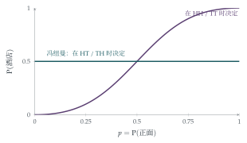

STEP I 2019，第 11 题
继续之前，请先阅读题目（原题为英文）。题目载于 OCR 提供下载的 2019 年 STEP 试卷（zip 文件）内的 STEP I 试卷： www.ocr.org.uk/Images/696590-2019-past-papers.zip
引子
你要作出一个公平（fair）的决定，但手上唯一的硬币是弯的，而且你不知道它偏差（bias）有多大。这样还能公平地作出选择吗？冯纽曼（John von Neumann）在 1951 年给出的答案是：掷两次。若结果是 HT，就选酒店；若是 TH，就选茶室；若是 HH 或 TT，就再掷两次。由于 HT 和 TH 的概率（probability）都是 \(pq\)，所以不论 \(p\) 是多少，这个决定都完全公平。
本题的程序刚好相反：它在出现 HH 和 TT 时作决定，这样做很快，却不公平（选酒店的概率是 \(\frac{p^2}{p^2 + q^2}\)）。本题要证明的是，不论硬币如何，这个程序都不会拖得很久。比较这两个程序，可以看到产生随机性时的一个基本取舍（trade-off）：速度与公平之间的取舍。
动笔之前
在一轮之中，作出决定的概率是多少？没有决定的概率又是多少？\(2pq\) 最大可以取甚么值？
若两枚硬币结果相同，便作出决定，概率是 \(p^2 + q^2\)；否则他们继续下去，概率是 \(2pq\)。由于 \(pq = p(1 - p) \leq \frac14\)（当 \(p = \frac12\) 时等号成立），所以 \(2pq \leq \frac12\)。
逐步解题
阶段 1 在第 \(n\) 轮作出决定
各轮之间互相独立（independent）。要在第 \(n\) 轮作出决定，须先有 \(n - 1\) 轮结果不同，然后一轮结果相同： \[\mathrm{P}(\text{作出决定的轮次为 } n) = (2pq)^{n-1}(p^2 + q^2). \qed\]
阶段 2 在第 \(n\) 轮或之前作出决定
在首 \(n\) 轮中没有作出决定的概率是多少？
\(n\) 轮之内没有决定的概率是 \((2pq)^n \leq \bigl(\frac12\bigr)^n\)，所以不论 \(p\) 是多少，在第 \(n\) 轮或之前作出决定的概率至少是 \(1 - \frac{1}{2^n}\)。■
阶段 3 三个人
第一轮出现两个正面和一个反面之后，第三个人把反面翻成正面。第二轮要发生甚么事才会有决定？如果第一轮是两个反面和一个正面呢？
第一轮作出决定的概率是 \(p^3 + q^3\)。否则，有两枚硬币结果相同，另一枚不同。若多数是正面（概率为 \(3p^2q\)），那枚不同的硬币会被翻成正面，而第二轮要作出决定，就需要另外两人都掷出正面：概率是 \(p^2\)（此时已不可能全是反面）。同理，若多数是反面（概率为 \(3pq^2\)），要作出决定就需要两个反面：\(q^2\)。所以 \[\mathrm{P}(\text{作出决定的轮次不迟于 } 2) = p^3 + q^3 + 3p^2q\cdot p^2 + 3pq^2\cdot q^2.\]
把所有东西用 \(s = pq\) 表示。（利用 \(p + q = 1\)。）
我们有 \(p^3 + q^3 = (p + q)^3 - 3pq(p + q) = 1 - 3s\)，以及 \(3p^4q + 3pq^4 = 3s(p^3 + q^3) = 3s(1 - 3s)\)。所以 \[\mathrm{P} = 1 - 3s + 3s - 9s^2 = 1 - 9s^2 \geq 1 - \frac{9}{16} = \frac{7}{16},\] 因为 \(s \leq \frac14\)。■
回顾
补事件（complement）。“在第 \(n\) 轮或之前至少发生一次”最容易的算法是 \(1 -\)（“\(n\) 轮之内从未发生”）。
为最坏情况定界。未知的 \(p\) 是靠不等式（inequality）\(pq \leq \frac14\) 来处理的。
对称函数（symmetric functions）。对 \(p\) 和 \(q\) 对称的式子，用 \(p + q = 1\) 和 \(pq\) 来表示时便会简化。
背后的数学
冯纽曼的妙计
题目中的程序很快，但有偏差。冯纽曼的程序则是公平的：掷两次，出现 HT 或 TH 就作决定，出现 HH 或 TT 就重复。每次尝试成功的概率是 \(2pq\)，所以平均需要 \(\frac{1}{2pq}\) 次尝试；当硬币偏差很大时，这会很慢（图 12.9.1）。题目的程序每轮作出决定的概率是 \(p^2 + q^2 \geq \frac12\)，但当 \(p > \frac12\) 时，它的结果偏向酒店。

提取随机性
冯纽曼的妙计是第一个随机性提取器（randomness extractor）：一种把不完美的随机性变成完美随机性的程序。它浪费很多（每两次投掷最多只得到一个公平的位元，而且往往一个也得不到）；更好的方法会把被弃掉的 HH 和 TT 重新利用，从而提取硬币所含的几乎全部随机性，而这随机性的多少是用硬币的熵（entropy）来量度的，即每次投掷 \(-p\log_2p - q\log_2q\) 个位元。提取器用于电脑的硬件随机数产生器：这些产生器收集不可预测但有偏差的物理杂讯，并必须把它变成无偏差的位元，供密码学（cryptography）使用。
冯纽曼在 1951 年的论文“Various techniques used in connection with random digits”中描述了这个妙计。当时他和同事正在为设计核武器而进行一些最早期的电脑模拟（即“蒙地卡罗方法”（Monte Carlo method））。在同一篇论文中，他就用算术方法产生随机数说了一句名言：“任何人若考虑用算术方法来产生随机数字，当然就是身处罪恶之中。”
思维技巧
当某个参数未知时，找出那些不论参数取何值、概率都相等的事件，并以它们作为决定的依据。
HT 和 TH 有相同的概率 \(pq\)，所以比较这两者就把 \(p\) 完全消去了。在大学里，同样的想法在统计学中以枢轴量（pivotal quantities）的形式出现，也出现于实验设计之中：在那里，随机化（randomisation）和对称性会把未知的效应抵消掉。
延伸练习
轮数的期望值。求第 (i) 部分的程序所需轮数的期望值（expected number），以及冯纽曼的程序所需轮数的期望值。对哪些 \(p\) 而言，冯纽曼的程序较慢？
公平的三选一。利用一枚有偏差的硬币，设计一个程序，从三个选项中选出一个，使每个选项的概率都恰好是 \(\frac13\)。
用公平硬币造出有偏差的骰子。利用一枚公平的硬币，设计一个程序，模拟一枚掷出正面的概率恰好是 \(\frac13\) 的硬币。所需投掷次数的期望值是多少？
再看三个人。在第 (ii) 部分中，他们去酒店的概率是多少？请以 \(p\) 的函数表示。当 \(p = \frac12\) 时，这个程序公平吗？
延伸阅读
John von Neumann，“Various techniques used in connection with random digits”，National Bureau of Standards Applied Mathematics Series 12 (1951)。篇幅短小而著名。
Donald Knuth，The Art of Computer Programming, Vol. 2（Addison-Wesley），第 3 章，论随机数。
Michael Mitzenmacher & Eli Upfal，Probability and Computing（Cambridge University Press），论提取随机性与熵。